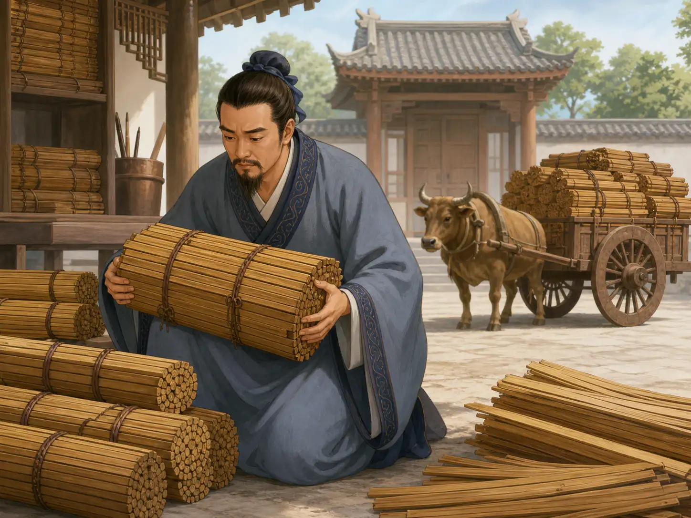
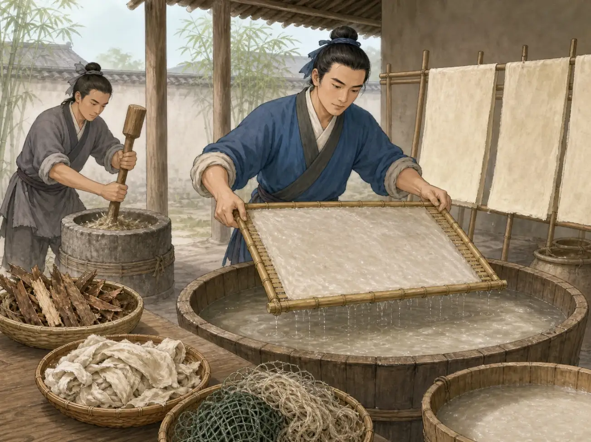

纸是怎么从树皮变出来的？
How Did Tree Bark Become Paper?
Page 1
拿起一块树皮摸一摸。它粗粗的、硬硬的，上面还有一道一道的裂纹。再摸一张纸，纸却又薄又轻，风一吹就能飘起来。这两样东西怎么看都不像是一家人。
可是，中国的造纸工匠很早就学会了用一些树木的内皮来造纸。他们的办法并不是把树皮一点一点削薄，而是更巧妙：先把树皮拆开。
Pick up a piece of tree bark. It feels rough and stiff, with bumps and cracks running across its surface. Now compare it with a sheet of paper. Paper is thin, smooth, and light enough to flutter in the air. They hardly seem like they could be related.
Yet for centuries, Chinese papermakers have made paper from the inner bark of certain trees. Their secret was not to shave the bark thinner and thinner. Instead, they did something much cleverer: they took it apart.
Page 2
没有纸的时候
Before Paper Was Everywhere

Bamboo and wooden slips were important writing materials in ancient China; bundles on an ox cart show how heavy and bulky they could be.
两千多年前，中国人已经有很多东西需要写下来：书信、命令、记录、诗文和书籍。可是那时候，桌子上当然没有一摞随手就能拿来用的纸。
人们常把字写在细长的竹片或木片上，再用绳子把它们编在一起。竹简很好用，可文章一长，竹片就会越来越多。想象一下，一本书如果像一大捆细细的木尺一样，带在身上可一点也不轻。
丝帛也可以写字。它又轻又平整，可是价格太贵，不可能什么都拿丝来写。
如果能找到一种既轻巧、原料又比较容易得到的东西，那就方便多了。答案就藏在植物里面。
More than two thousand years ago, people in China already had plenty to write down. There were letters, government records, poems, books, and messages. But there were no piles of notebook paper waiting on a desk.
One common writing material was bamboo. Thin bamboo strips could be written on and tied together with cords. They worked well, but a long book could require many strips. Imagine carrying a book made from a bundle of little wooden rulers. It could become surprisingly heavy.
People could also write on silk. Silk was light, smooth, and easy to roll, but it was far too valuable to use for every ordinary note or record.
A lighter, less expensive writing material would be much more useful. The answer was hidden inside plants.
Page 3
树皮里面藏着什么？
What Is Hiding Inside Bark?

Fibers disperse in water, rise as a wet sheet on a screen, and are then pressed and dried; the sequence shows the basic process rather than reconstructing Cai Lun's workshop.
有些树皮的里面藏着又细又长的植物纤维。造纸真正需要的，就是这些纤维。
工匠先把材料泡软，再经过蒸煮和反复捶打，把原本连在一起的纤维慢慢打散。放进水里以后，成千上万根细小的纤维就在水中漂来漂去，变成一池浑浑的纸浆。
这时候，它还一点也不像纸。工匠把一张细密的帘子轻轻伸进水里，再慢慢捞起来。水从小缝中流走，一层薄薄的纤维却留在了上面。纤维一根搭着一根，交错在一起，渐渐变成一张湿湿的薄片。再经过压平和晾干，一张纸就出现了。
所以，造纸最聪明的地方并不是把树皮“压扁”，而是先把植物拆成细小的纤维，再让这些纤维重新聚在一起。
Inside certain kinds of bark are long, tough plant fibers. Those fibers are what papermakers want.
First, the fibrous material has to be softened. Then it is soaked, cooked, and beaten until the pieces begin to break apart. Instead of one solid strip of bark, there are now thousands of tiny fibers. Mixed into a vat of water, they float around like a cloudy soup.
At this point, the mixture does not look much like paper at all. Then the papermaker slides a fine screen into the vat and lifts it gently upward. Most of the water drains away, but a thin layer of fibers stays on the screen. The fibers lie across one another in every direction, tangling together into a soft, wet sheet.
After the sheet is pressed and dried, something remarkable has happened. The rough plant material is gone, but its fibers are still there, now joined together in a completely new form. That is the basic trick of papermaking: take plant fibers apart, spread them through water, and bring them back together as a sheet.
Page 4
破布和旧鱼网也能造纸
Bark, Rags—and Even Old Fishing Nets
树皮并不是唯一能提供纤维的材料。《后汉书》里记载，一位叫Cài Lún · 东汉官员，因改进并推广造纸方法而闻名。的官员曾用树皮、麻头、破布和旧鱼网等材料来造纸。
旧鱼网也可以变成纸吗？如果鱼网和旧布里面还有能利用的植物纤维，就可以重新把它们打散，再做成新的纸。一件已经穿旧的布，不一定只能被扔掉；它里面的纤维还可以有第二次用途。
蔡伦后来成了中国造纸史上最有名的人之一。公元105年，史书记载他把改进后的造纸方法报告给皇帝。不过，在蔡伦以前，中国已经有纸了。考古学家发现过比他生活年代更早的纸片。
所以，纸并不是某一天突然被一个人“发明完成”的。很多人经过一次又一次的试验，慢慢把造纸的方法做得更好、更实用。
Tree bark was not the only material Chinese papermakers could use. An ancient history book tells us that an official named Cài Lún · 蔡伦 · An Eastern Han official remembered for improving and reporting papermaking methods. worked with materials including tree bark, hemp, old cloth, and worn fishing nets.
Old fishing nets may sound like a strange ingredient, but to a papermaker they could still contain useful fibers. Instead of throwing the old material away, those fibers could be broken apart and used again.
Cai Lun became one of the most famous names in the history of paper. In 105 CE, the Book of the Later Han records that he presented improved papermaking methods to the emperor. Paper already existed in China before Cai Lun—the oldest archaeological examples are earlier than his lifetime—but his work helped improve and spread the craft.
So the story of paper was not one person suddenly inventing a perfect sheet. It was a craft that people learned, changed, and improved over time.
Page 5
从一捆竹简到一张纸
From Heavy Bundles to Light Pages
工匠越来越熟练以后，纸也可以做得更薄、更平、更结实。后来，中国人还用构树皮、麻、竹子、稻草等不同植物材料来造纸。
写东西也因此变得不一样了。原本需要许多竹片才能写完的文章，可以写在轻轻的纸上；书信可以折起来或者卷起来；绘画可以铺开在一大张纸上。书籍、地图、诗文和shūfǎ · 用毛笔等工具书写汉字的艺术。，都有了新的去处。
其实，那些植物纤维今天还藏在纸里面。下次撕开一张纸时，可以仔细看看毛茸茸的边缘。那里伸出来的一丝一丝，就是交织在一起的纤维。
树皮并不是被越压越薄，最后变成了一张纸。工匠先把它拆开，再用那些细小的纤维重新做出一个完全不同的东西。树上当然不会长出一张纸。可是，做纸需要的材料，一直藏在树里面。
As papermakers became more skilled, they learned to make paper thinner, smoother, stronger, or softer depending on what it was for. Chinese papermakers eventually used many different plant materials, including bark, hemp, bamboo, and straw.
The result changed what a written object could feel like. A long text no longer had to be a heavy bundle of bamboo strips. A letter could be folded or rolled. A painting could spread across a broad sheet. Books, maps, records, poems, and shūfǎ · 书法 · The art of writing Chinese characters with expressive brushwork. all found a new home on paper.
The most surprising part is that the old plant never completely disappears. Tear a sheet of paper and look closely at the fuzzy edge. You may be able to see tiny threads sticking out. Those are fibers, still tangled together inside the page.
The rough bark did not simply become thinner until it turned into paper. Papermakers pulled it apart into fibers and built something new from those pieces. A tree could never grow a sheet of paper. But hidden inside it were the pieces needed to make one.